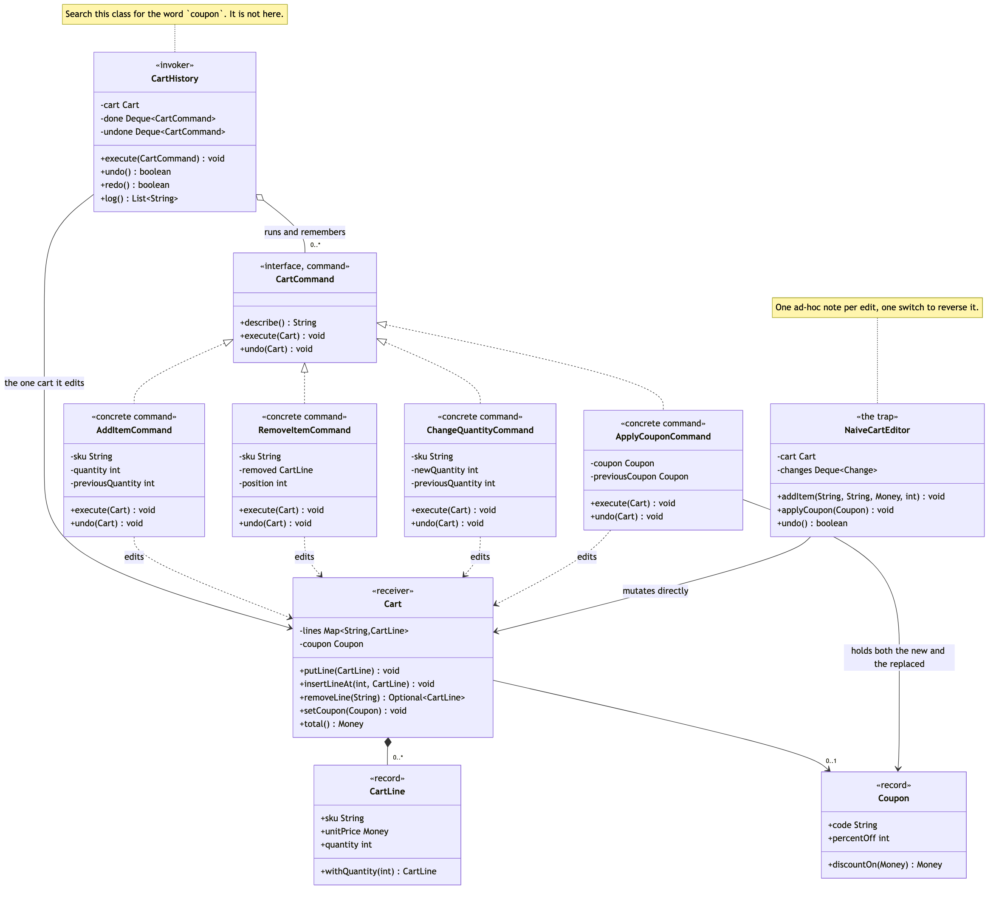

Command Pattern
Demonstrates the Behavioural Command design pattern using undoable shopping cart edits in an online shop as an example.
CartCommand— the command. One interface:execute(Cart)performs the edit,undo(Cart)takes it back,describe()says what it was for the audit log. Deliberately nocanUndo()and no id, because a command that might not be reversible is not a command this history can hold.AddItemCommand/RemoveItemCommand/ChangeQuantityCommand/ApplyCouponCommand— the concrete commands. Each captures what its ownundowill need — the previous quantity, the removed line and its position, the coupon that was replaced — and captures it insideexecute, from the cart, not in the constructor.Cart— the receiver. Holds the lines and the one coupon, and does the work when told. It has no reference to a command and no idea that anything is being recorded.CartHistory— the invoker. Two stacks ofCartCommand, anexecutethat pushes and clears the redo stack, anundothat pops and moves. Search it forcoupon,quantityorskuand you find nothing.NaiveCartEditor— the trap, kept for contrast. Edits the cart directly and writes a note beside it saying what was asked for, then undoes by switching over the kind of note. Correct for a cart that only ever gains new lines, wrong the moment an edit depends on what was already there.CartLine/Coupon/Money— the supporting types. Pennies aslong, so the totals in the output are the totals a customer would be charged.CartCommandsDemo— runnable entry point that shows the naive undo losing a customer's items and their discount, the same two edits undone correctly as commands, undo and redo restoring a line's position, and the audit log that came free.
Run
./gradlew runWhich prints:
=== 1. The trap: undo notes that record the request, not the cart ===
The customer has 3 headphones and a 10% code:
H-100 Wireless headphones 3 x £89.99 = £269.97
subtotal £269.97
WELCOME10 (-10%) -£27.00
total £242.97
They add 2 more and try a better code:
H-100 Wireless headphones 5 x £89.99 = £449.95
subtotal £449.95
BLACKFRIDAY (-25%) -£112.49
total £337.46
Two undos later, they expected to be back where they started:
(empty)
subtotal £0.00
total £0.00
The 3 headphones are gone, and so is WELCOME10.
=== 2. The same edits, as objects ===
H-100 Wireless headphones 3 x £89.99 = £269.97
C-220 USB-C cable 1 x £7.50 = £7.50
subtotal £277.47
WELCOME10 (-10%) -£27.75
total £249.72
3 edits recorded, all of them undoable.
=== 3. Undo, then redo ===
Three lines, then the customer removes the middle one:
H-100 Wireless headphones 1 x £89.99 = £89.99
K-330 Carry case 1 x £24.00 = £24.00
subtotal £113.99
total £113.99
history.undo() -- and the cable goes back where it was:
H-100 Wireless headphones 1 x £89.99 = £89.99
C-220 USB-C cable 2 x £7.50 = £15.00
K-330 Carry case 1 x £24.00 = £24.00
subtotal £128.99
total £128.99
history.redo() -- removed again:
H-100 Wireless headphones 1 x £89.99 = £89.99
K-330 Carry case 1 x £24.00 = £24.00
subtotal £113.99
total £113.99
=== 4. The two edits the naive version got wrong ===
5 headphones and the better code:
H-100 Wireless headphones 5 x £89.99 = £449.95
subtotal £449.95
BLACKFRIDAY (-25%) -£112.49
total £337.46
Two undos later:
H-100 Wireless headphones 3 x £89.99 = £269.97
subtotal £269.97
WELCOME10 (-10%) -£27.00
total £242.97
3 headphones, and WELCOME10 is back.
=== 5. What you get for free once an edit is an object ===
history.log():
add 1 x H-100
set H-100 to 4
apply coupon WELCOME10
CartHistory does not contain the words coupon, quantity or SKU.
A fifth kind of edit is a new class and nothing else.Sections 1 and 4 make the same two edits and then undo them twice. The difference between them is the whole project.
Test
./gradlew test37 tests across 3 classes. CartCommandTest covers the four commands in four @Nested groups, each written against a cart that was not empty — undoing a merged add restores the previous quantity rather than deleting the line, undoing a removal puts the line back at its original index, and undoing a coupon restores the coupon it replaced. CartHistoryTest covers the invoker in three @Nested groups — undo and redo ordering, recording, and the invoker's ignorance — including that a new command clears the redo stack, that a command which throws is never pushed, and that a gift-wrapping CartCommand declared inside the test executes and undoes unchanged. NaiveCartEditorTest holds the comparison: the same two edits that the pattern gets right, pinned as failures in the naive editor.
Learning Material
Start here if you are new to the pattern — the docs are ordered as a learning path.
| Document | What it covers |
|---|---|
docs/prerequisites.md | What to know and install before you start |
docs/problem-statement.md | The problem the pattern solves, and why the naive approach hurts |
docs/command-pattern-explained.md | The pattern itself, the code walked through, pitfalls, and comparisons |
docs/class-diagram.md | Static structure |
docs/uml-diagram.md | Runtime call flow |
docs/animation.html | Animated, step-by-step walkthrough — open in a browser. Optional narration via the Narration button |
docs/session.md | A 60-minute guided session plan for teaching it |
docs/youtube.md | Title, description, chapters and thumbnail for publishing the video |
docs/thumbnail.png | The 1280×720 image to upload as the YouTube thumbnail |
docs/spec.md | The project specification — problem, code, video and publishing quality bar. Also as spec.html |
video/ | A narrated video, plus the script and build pipeline |

The pattern in one picture

Video
video/command-pattern-explained.mp4 — 1080p, narrated. An audio-only version is alongside it. See video/README.md to rebuild or re-record it.